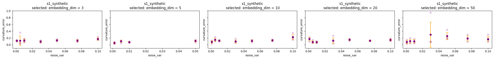

Notebook source code: notebooks/place_cells/25_evaluate_curvature_estimation.ipynb
Post-Training: Evaluate Error in Curvature Estimation#
In [1]:
import setup
setup.main()
Working directory: /home/nmiolane/code/neurometry/neurometry
Directory added to path: /home/nmiolane/code/neurometry
Directory added to path: /home/nmiolane/code/neurometry/neurometry
In [2]:
%load_ext autoreload
%autoreload 2
import os
os.environ["GEOMSTATS_BACKEND"] = "pytorch"
import matplotlib.pyplot as plt
import numpy as np
import pandas as pd
import torch
INFO: Using pytorch backend
Evaluate error with respect to the embedding dimension#
In [3]:
ed = [
2,
4,
5,
6,
7,
8,
9,
10,
11,
12,
13,
14,
15,
16,
17,
18,
19,
20,
21,
22,
23,
24,
]
curvature_error_ed = [
0.001689126,
0.001012303,
0.002482807,
0.001903473,
0.002538689,
0.002346822,
0.00185122,
0.002858928,
0.001734209,
0.004227371,
0.003866927,
0.0020231,
0.001000167,
0.001913845,
0.002814295,
0.002451746,
0.00226067,
0.003887875,
0.00125866,
0.000970031,
0.001079341,
0.003844655,
]
In [4]:
plt.scatter(ed, curvature_error_ed, color="green")
plt.ylim(top=0.04)
plt.xlabel("Embedding dimension")
plt.ylabel("Normalized Error");

Evaluate error with respect to the noise variance#
In [5]:
fig = plt.figure(figsize=(30, 10))
ax = fig.add_subplot(131)
noise_var = [
0.001,
0.005,
0.01,
0.02,
0.025,
0.03,
0.04,
0.05,
0.06,
0.07,
0.075,
0.08,
0.09,
0.1,
0.125,
]
curvature_error_noise = [
0.0038236,
0.00393826,
0.0082392,
0.013263643,
0.018831209,
0.023393472,
0.026830469,
0.028257823,
0.026462683,
0.029377216,
0.029433391,
0.036400927,
0.032171806,
0.029818693,
0.036835936,
]
std = [
0.00255255,
0.00162342,
0.00494583,
0.005526395,
0.015162444,
0.013581833,
0.011809724,
0.010161061,
0.01691731,
0.009538343,
0.004111763,
0.006278068,
0.00807038,
0.010022126,
0.00662975,
]
std = std / np.sqrt(5)
ax.errorbar(
x=noise_var,
y=curvature_error_noise,
yerr=std,
fmt="o",
ecolor="orange",
capsize=5,
color="purple",
)
plt.xlabel("Input noise standard deviation, as fraction of radius")
plt.ylabel("Normalized Error")
plt.ylim(top=0.045)
# plt.savefig("est_theory.svg")
noise_vars2 = [0.02, 0.05, 0.01, 0.005, 0.0005, 0.001, 0.0001]
curvature_errors_noise2 = [
0.032287827,
0.063259569,
0.026015801,
0.036729573,
0.014929154,
0.033680042,
0.01449421,
]
stds2 = [
0.00579972,
0.014732794,
0.005003834,
0.036167766,
0.004776713,
0.039667175,
0.002329629,
] / np.sqrt(5)
axs2 = fig.add_subplot(133)
axs2.errorbar(
x=noise_vars2,
y=curvature_errors_noise2,
yerr=stds2,
fmt="o",
color="purple",
ecolor="orange",
capsize=5,
)
ax3 = fig.add_subplot(132)
ax3.scatter(ed, curvature_error_ed)
ax3.set_xlabel("Input noise standard deviation, as fraction of radius")
plt.ylabel("Normalized Error")
ax3.scatter(ed, curvature_error_ed, color="green")
plt.ylim(top=0.045)
plt.xlabel("Embedding dimension")
plt.ylabel("Normalized Error")
# plt.savefig("error.svg")
Out [5]:
Text(0, 0.5, 'Normalized Error')

In [6]:
import setup
setup.main()
import matplotlib.pyplot as plt
import numpy as np
import wandb
Working directory: /home/nmiolane/code/neurometry/neurometry
Directory added to path: /home/nmiolane/code/neurometry
Directory added to path: /home/nmiolane/code/neurometry/neurometry
In [7]:
import importlib
import evaluate
import load_runs
importlib.reload(evaluate)
importlib.reload(load_runs)
Out [7]:
<module 'load_runs' from '/home/nmiolane/code/neurometry/neurometry/notebooks/load_runs.py'>
Get Learned and True Curvature Profiles#
In [8]:
run_id = "354e4bdc"
config = load_runs.config_from_run_id(run_id)
learned_profile, true_profile = load_runs.curvature_profiles_from_run_id(run_id, config)
In [9]:
learned_profile.head()
Out [9]:
| Unnamed: 0 | geodesic_dist | curv_norm_learned | z_grid_theta | z_grid_phi | |
|---|---|---|---|---|---|
| 0 | 0 | 0.0 | 379561.286021 | 0.01 | 0.000000 |
| 1 | 1 | 0.0 | 400459.983392 | 0.01 | 0.698132 |
| 2 | 2 | 0.0 | 425307.644375 | 0.01 | 1.396263 |
| 3 | 3 | 0.0 | 443282.731994 | 0.01 | 2.094395 |
| 4 | 4 | 0.0 | 445239.979779 | 0.01 | 2.792527 |
In [10]:
true_profile.head()
Out [10]:
| Unnamed: 0 | geodesic_dist | curv_norm_true | z_grid_theta | z_grid_phi | |
|---|---|---|---|---|---|
| 0 | 0 | 0.0 | 5.504101 | 0.01 | 0.000000 |
| 1 | 1 | 0.0 | 5.504101 | 0.01 | 0.698132 |
| 2 | 2 | 0.0 | 5.504101 | 0.01 | 1.396263 |
| 3 | 3 | 0.0 | 5.504101 | 0.01 | 2.094395 |
| 4 | 4 | 0.0 | 5.504101 | 0.01 | 2.792527 |
In [11]:
fig, axs = plt.subplots(1, 2, figsize=(6, 2))
axs[0].plot(learned_profile["z_grid_theta"], learned_profile["curv_norm_learned"])
axs[0].set_title("learned")
axs[1].plot(true_profile["z_grid_theta"], true_profile["curv_norm_true"])
axs[1].set_title("true");

In [12]:
z_grid = np.vstack([true_profile["z_grid_theta"], true_profile["z_grid_phi"]]).T
print(z_grid.shape)
print(z_grid[:10])
curvature_error = evaluate.compute_curvature_error(
torch.tensor(z_grid),
torch.tensor(learned_profile["curv_norm_learned"].values),
torch.tensor(true_profile["curv_norm_true"].values),
config,
)
curvature_error
(100, 2)
[[0.01 0. ]
[0.01 0.6981317 ]
[0.01 1.3962634 ]
[0.01 2.0943951 ]
[0.01 2.7925268 ]
[0.01 3.4906585 ]
[0.01 4.1887902 ]
[0.01 4.88692191]
[0.01 5.58505361]
[0.01 6.28318531]]
Out [12]:
tensor(1.0000)
Use wandb API to get most recent runs#
In [13]:
api = wandb.Api()
runs = api.runs("bioshape-lab/neurometry")
today = pd.to_datetime("2023-03-09")
df_list = []
for i_run, run in enumerate(runs):
if pd.to_datetime(run.createdAt) > today:
run_dict = {}
run_dict.update(run.summary._json_dict)
config_dict = {
k: v
for k, v in run.config.items()
if (k != "wandb" and not k.startswith("_"))
}
run_dict.update(config_dict)
df_list.append(pd.DataFrame(run_dict, index=[i_run]))
runs_df = pd.concat(df_list)
In [14]:
len(runs_df)
Out [14]:
2789
In [15]:
by_to_color = {"noise_var": "orange", "embedding_dim": "darkgreen"}
In [16]:
def _recompute_curvature_error(df):
for i_row, row in df.iterrows():
run_id = row["run_name"].split("_")[
1
] # da1b8070" # "fcd255d1" #"ep3kxahu" #"aeb2dbeb"
config = load_runs.config_from_run_id(run_id)
learned_profile, true_profile = load_runs.curvature_profiles_from_run_id(
run_id, config
)
z_grid = np.vstack([true_profile["z_grid_theta"], true_profile["z_grid_phi"]]).T
curvature_error = evaluate.compute_curvature_error(
torch.tensor(z_grid),
torch.tensor(learned_profile["curv_norm_learned"]),
torch.tensor(true_profile["curv_norm_true"]),
config,
)
df.loc[i_row, "curvature_error"] = float(curvature_error)
return df
In [17]:
dataset_name_to_std_threshold = {"s1_synthetic": 1, "s2_synthetic": 2}
In [28]:
def plot_errorbar_by(
df,
dataset_name="s1_synthetic",
by="noise_var",
select="embedding_dim",
select_value=2,
ax=None,
):
df = df[
[
"run_name",
"embedding_dim",
"noise_var",
"curvature_error",
"train_loss",
"test_loss",
"train_recon_loss",
"test_recon_loss",
"test_latent_loss",
"average_curv_norms_learned",
"average_curv_norms_true",
"std_curv_norms_learned",
]
][df["dataset_name"] == dataset_name]
df = df[df[select] == select_value]
# print("pre-dropna:", np.unique(df[by]))
df = df.dropna()
# # Remove high curvatures
# df = df[df["average_curv_norms_learned"] < 1.5 * df[ "average_curv_norms_true"]]
# df = df[df["std_curv_norms_learned"] < dataset_name_to_std_threshold[dataset_name]]
# print("post-dropna:", np.unique(df[by]))
df["average_curv_norms_learned"] = df["average_curv_norms_learned"].astype(float)
df["std_curv_norms_learned"] = df["std_curv_norms_learned"].astype(float)
grouped = df.groupby(by)
# print(f"Grouped by: {by} = : Found {len(grouped)} groups, for {len(df)} eligible runs.")
lowest_losses = grouped.apply(lambda x: x.nsmallest(7, "std_curv_norms_learned"))
df = lowest_losses.reset_index(drop=True)
grouped = df.groupby(by)
lowest_losses = grouped.apply(
lambda x: x.nsmallest(4, "average_curv_norms_learned")
)
df = lowest_losses.reset_index(drop=True)
# grouped = df.groupby(by)
# lowest_losses = grouped.apply(lambda x: x.nsmallest(5, "test_recon_loss"))
# df = lowest_losses.reset_index(drop=True)
if dataset_name == "s2_synthetic":
df = _recompute_curvature_error(df)
mean_dict = {}
std_dict = {}
unique_by = np.unique(df[by])
for by_val in unique_by:
mean_dict[by_val] = np.nanmean(df["curvature_error"][df[by] == by_val])
std_dict[by_val] = np.nanstd(df["curvature_error"][df[by] == by_val])
ax.scatter(df[by], df["curvature_error"], c="purple", alpha=0.2)
# ax.plot(
# [k for k in mean_dict.keys()],
# [v for v in mean_dict.values()],
# linewidth=2,
# c="purple",
# )
ax.errorbar(
[k for k in mean_dict],
[v for k, v in mean_dict.items()],
[v for k, v in std_dict.items()],
fmt="o",
ecolor=by_to_color[by],
capsize=5,
color="purple",
)
# try:
# ax.set_ylim((-0.1, df["curvature_error"].max()))
# except:
ax.set_ylim((-0.1, 1))
ax.set_xlabel(by)
ax.set_ylabel("curvature_error")
ax.set_title(f"{dataset_name}\n selected: {select} = {select_value}")
return
In [29]:
EMBEDDING_DIMS = [3, 5, 10, 20, 50]
dataset_name = "s1_synthetic"
by = "noise_var"
fig, axes = plt.subplots(
nrows=1, ncols=len(EMBEDDING_DIMS), figsize=(24, 3), sharey=True
)
for i, embedding_dim in enumerate(EMBEDDING_DIMS):
plot_errorbar_by(
runs_df,
dataset_name=dataset_name,
by="noise_var",
select="embedding_dim",
select_value=embedding_dim,
ax=axes[i],
)
plt.tight_layout()
fig.savefig(f"notebooks/figures/estimation_{dataset_name}_{by}.svg")

In [30]:
NOISE_VARS = [0.001, 0.005, 0.01, 0.03, 0.05, 0.075, 0.1] # 0.0,
by = "embedding_dim"
fig, axes = plt.subplots(nrows=1, ncols=len(NOISE_VARS), figsize=(24, 3), sharey=True)
for i, noise_var in enumerate(NOISE_VARS):
plot_errorbar_by(
runs_df,
dataset_name=dataset_name,
by="embedding_dim",
select="noise_var",
select_value=noise_var,
ax=axes[i],
)
plt.tight_layout()
fig.savefig(f"notebooks/figures/estimation_{dataset_name}_{by}.svg")

In [31]:
EMBEDDING_DIMS = [3, 5, 10, 20, 50]
dataset_name = "s2_synthetic"
by = "noise_var"
fig, axes = plt.subplots(
nrows=1, ncols=len(EMBEDDING_DIMS), figsize=(24, 3), sharey=True
)
for i, embedding_dim in enumerate(EMBEDDING_DIMS):
df = plot_errorbar_by(
runs_df,
dataset_name="s2_synthetic",
by="noise_var",
select="embedding_dim",
select_value=embedding_dim,
ax=axes[i],
)
plt.tight_layout()
fig.savefig(f"notebooks/figures/estimation_{dataset_name}_{by}.svg")

In [32]:
NOISE_VARS = [0.001, 0.005, 0.01, 0.03, 0.05, 0.075, 0.1] # 0.0,
by = "embedding_dim"
fig, axes = plt.subplots(nrows=1, ncols=len(NOISE_VARS), figsize=(24, 3), sharey=True)
for i, noise_var in enumerate(NOISE_VARS):
plot_errorbar_by(
runs_df,
dataset_name="s2_synthetic",
by="embedding_dim",
select="noise_var",
select_value=noise_var,
ax=axes[i],
)
plt.tight_layout()
fig.savefig(f"notebooks/figures/estimation_{dataset_name}_{by}.svg")

In [ ]: